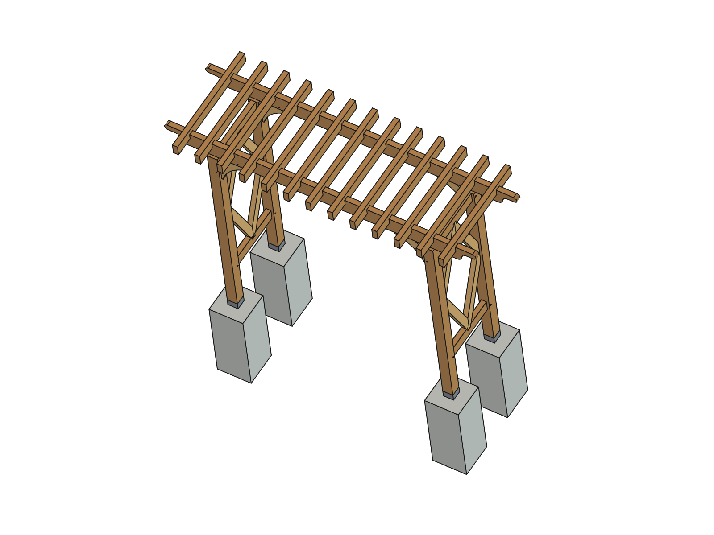
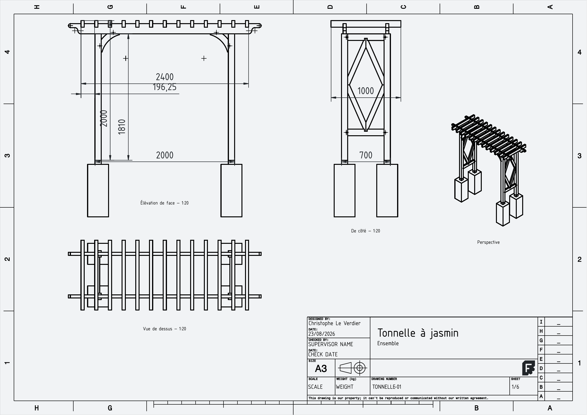

Cliquer n'importe où, ou Échap, pour fermer
Quatre poteaux, deux sablières, des chevrons et des losanges — et un tableur qui tient les 99 cotes. On change une valeur, on recalcule, et les plans d'exécution suivent.

Rien n'est saisi deux fois. Les longueurs de la fiche de débit viennent du tableur, et chacune est recoupée sur la boîte englobante du solide avant d'être écrite — un tableur peut mentir, un solide non.

| Pièce | épaisseur | hauteur |
|---|---|---|
| Sablière | 45 mm | 145 mm |
| Chevron | 45 mm | 95 mm |
| Traverse | 45 mm | 95 mm |
| Losange | 45 mm | 70 mm |
Sous la sablière, il reste la hauteur hors-tout moins la sablière et le chevron, mais augmentée des DEUX entailles du mi-bois, qui se regagnent :
C'est bas pour passer dessous : si la tonnelle doit s'enjamber, il faut monter la hauteur à 2300 ou 2400 — une valeur dans le tableur, et tout suit.
Pas le grimpant : un jasmin adulte ne pèse pas grand-chose et ne tord rien. Poteaux de 90 et sablières de 45×145 restent un minimum — c'est la portée entre poteaux qui les fixe ; en terrain venté, passer les poteaux à 100×100.
Ils forment deux paires symétriques. Repérer les faces avant de percer — c'est le genre d'erreur qui ne se voit qu'au montage, quand les quatre pièces sont déjà mortaisées.
Tous les assemblages le sont, mais rien n'est prévu pour les chevilles, les boulons ni les sabots de poteau. Et les aisseliers se débitent dans un plateau de 350 mm de large, pas dans du bois de section : à prévoir à l'achat.
Ne jamais supprimer une planche TechDraw dont les vues existent encore : FreeCAD ferme net, sans message. Le script de plans reconstruit donc le document avant de dessiner, et doit être lancé en premier.